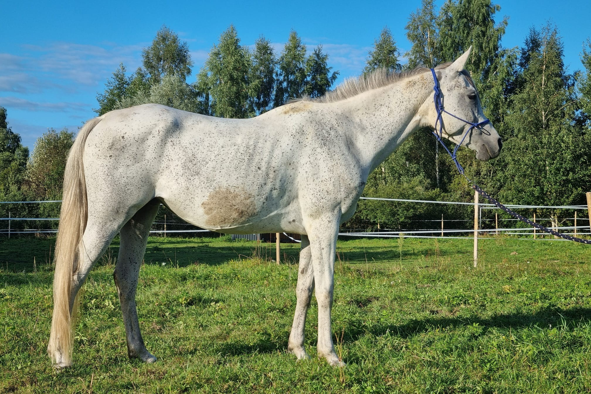
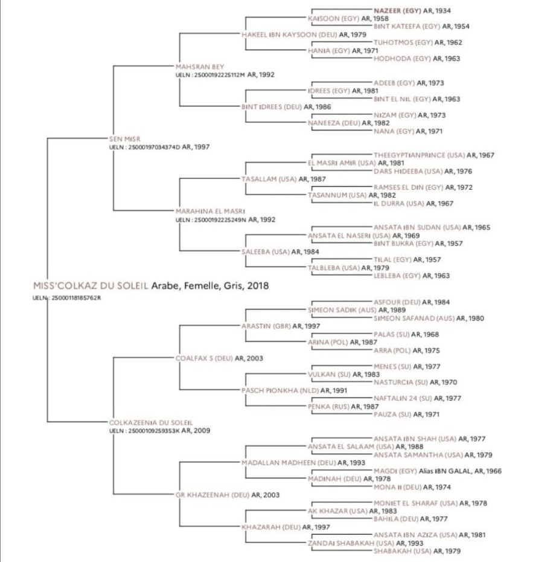
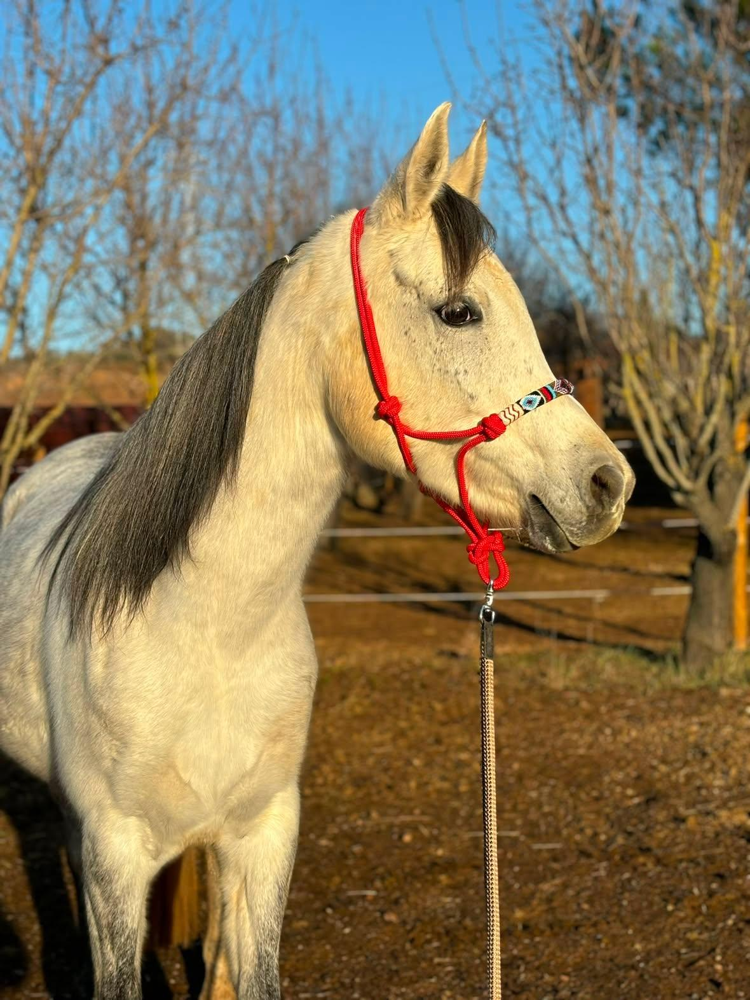
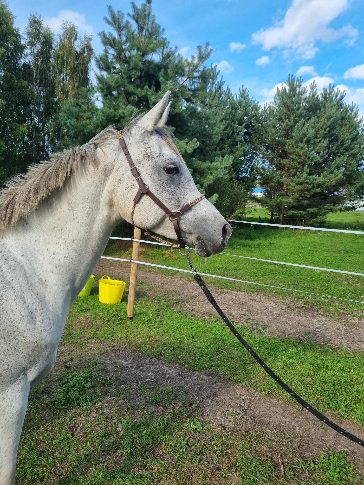
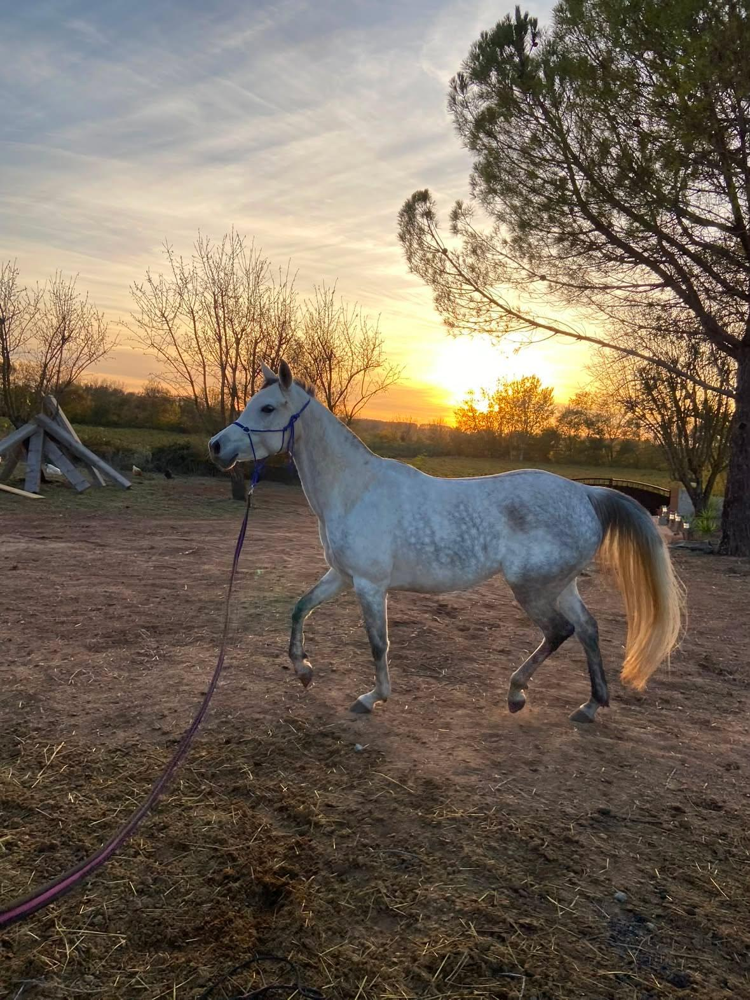

Miss'Colkaz du Soleil

About Miss - Sport Suitability
This is where I would be quite positive — but with an important qualification.
Endurance: Very interesting
This is probably the sport discipline best supported by the pedigree. The Sen Misr offspring include several endurance horses, and the IFCE record specifically identifies endurance activity among his progeny.
Therefore, if Miss herself has:
- good limbs and feet,
- efficient movement,
- good cardiovascular capacity,
- correct conformation,
- good recovery,
- and an appropriate temperament,
...I would consider her potentially interesting for endurance breeding.
Show jumping: Interesting but less predictable
The IPO 144 of Khazmi'Khaz du Soleil is a very interesting family indication.
However, I would not claim that Miss is a jumping prospect simply because of this. One successful relative is evidence of potential in the family, not proof of her own ability.
Pedigree

Documents & Downloads
Media Gallery


